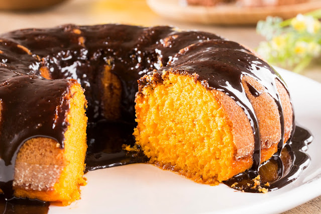

Bolo de Cenoura com Chocolate

Descrição
Receita deliciosa de bolo de cenoura com cobertura de chocolate.
Ingredientes
Massa do Bolo
- 3 cenouras médias (250g)
- 4 ovos
- Meia xícara (chá) de óleo
- 2 e meia xícaras (chá) de farinha de trigo
- 2 xícaras (chá) de açúcar
- 1 colher (sopa) de fermento em pó
Cobertura do Bolo
- 1 leite condensado (lata ou caixinha) 395g
- 1 colher (sopa) de manteiga
- Meia xícara (chá) de Chocolate em Pó
Etapas
Massa do Bolo
- Em um liquidificador, bata as cenouras, os ovos e o óleo.
- Despeje a mistura em um recipiente e misture o açúcar e a farinha de trigo peneirada com o fermento.
- Coloque em uma fôrma retangular (20 x 30 cm) untada, e leve ao forno médio (180°C), preaquecido, por 40 minutos.
- Enquanto isso, prepare a cobertura de brigadeiro.
Cobertura do Bolo
- Em uma panela coloque o leite condensado, o chocolate em pó e a manteiga e leve ao fogo baixo, mexendo sempre, até começar a desprender da panela.
- Despeje ainda quente sobre o bolo, distribua o chocolate granulado e deixe esfriar.